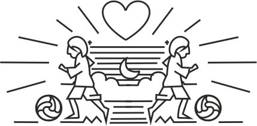

Gurleen Kaur Saini is an Indian Illustrator/Graphic Designer currently pursuing Masters In Graphic Design at the Maryland Institute College of Art (MICA) in Baltimore, US.
Gurleen is an avid lover of the beautiful game of football and graphic design. She has recently developed a new-found obsession towards coding and this product is a combination of all the three. This website could not have been possible without
Kristian Bjørnard
You can view Gurleen's other work here and
you can contact her on gsaini@mica.edu